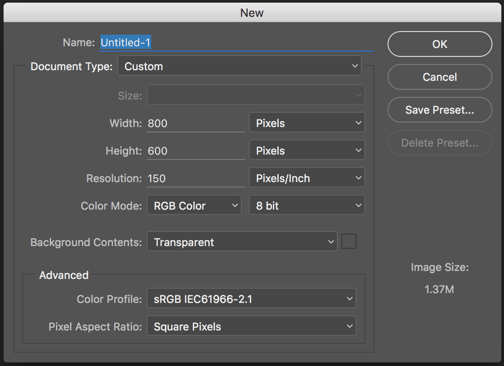

Photoshop for Web Design
Developed for GDI Philly by @BridgetCReed
Welcome!
Girl Develop It is here to provide affordable and accessible programs to learn software through mentorship and hands-on instruction.
Some "rules"
- We are here for you!
- Every question is important
- Help each other
- Have fun
Hello there!
I'm happy to have you here.
Let's take a few minutes and get to know each other.
- Who are you?
- What do you hope to get out of the class?
- If you choose any woman to be on the $20 bill, who would it be and why?
Day 1, Part 1
Photoshop Tips & Tricks
- Why Photoshop?
- Setting up your workspace
- File types, saving for web
- Layer organization
Day 1, Part 1
"The New Stuff"
- Artboards (yaaaaaaaaas!)
- Saving from layers
- Layer comps
REMEMBER:
- This is a survey of a very complex, multi-use program
- I don't know everything, and neither will you
- Have fun! Get messy! Ask questions!
"Fancy" Photoshop Lingo
There isn't much to learn, terminology-wise but...
PSD: The file extension for a Photoshop files.
(...and we'll cover other terms as we get to them.)
Why Photoshop?
Raster vs. Vector
Raster:
- Dot-based
- Dots = pixels (sometimes)
- Cannot resize without quality loss
- GIF, JPG, PNG
- Photoshop
Vector:
- Math-based (!)
- Uses geometry to create graphics (!)
- Infinitely resize while maintaining quality
- SVG, EPS
- Illustrator
Photoshop Alternatives
It's kind of hard to get away from Photoshop but some people do! They use:
- Illustrator
- Fireworks
- HTML and CSS right in the browser ("designing in the browser")
- Web-based prototyping tools (InVision, Adobe's Edge suite)
- Gimp (popular open source alternative)
Getting Around Photoshop
Units & Settings
Preferences
Under the Photoshop menu.
- Units & Rulers
- Guides & Grid
Toolbar
Panels
Workspaces
are...
Saved arrangements of:
- tools
- tool panels
- keyboard shortcuts
- menus
Window > Workspace
Let's Do It!

Take a few minutes to customize your workspace
Creating and working with actual FILES!
But first...
Shortcuts!
New Files
Grids & Guides
- Grid systems (960, 1140, various other templates)
- Guides - GuideGuide
- Smart guides
Your turn
Set up some grids for a layout:
- 960px wide
- 6 columns
- 10px gutter
Layer Organization
- Group and group some more
- Use clear names
- Get rid of the cruft
- Consolidate, within reason
- Repeat yourself
Image manipulation in 5 slides
1. Effects
- Filters vs Layer styles
- Destructive vs non
2. Smart Objects
They're your friends
3. Placing images
4. Blending modes
5. Layer masks
- Avoids destructive editing
- Make sure you select the mask when editing
- White/Black brush
- Lots more. Google's your friend!
End of Day 1!
Day 2
Welcome back!
The really exciting stuff
New features in CC 2015:
- Artboards!
- Layer comps (ok, not so new)
- Exporting from layers
Our files for today:
- Everything in the "images" folder
- VoteNorbert.psd
Artboards
What's the big deal?
- Good for web comps
- Device sizes baked in
- Better than switching between files
Exercise time!
Open VoteNorbert.psd
Create a new artboard for an iPhone 6
Notice the dimensions. What's up with that?
Layer Comps
What's the big deal?
- Many versions, same file
- Same layers
- Keep track of individual properties
Your turn
- Create two new layer comps
- Change something on your first comp
- Make sure you apply!
- Make another change on the 2nd comp, apply
- Make sure they're different!
Exporting from Layers
What's the big deal?
- No more slicing!
- NO MORE SLICING!
- Save in all formats, sizes
- Here's how it works:
1. Turn it on
- File > Generate > Image Assets
- Rename the layer to what the file should be named
- Easy? There's a bit more:
2. Give the file an extension
.jpg, .png(8, 24, or 32), .svg. gif
Save more than one file by separating them with commas:
file.gif, file.png, file.jpg saves 3 different files
file.png8, file.png24, file.png32
3. Give it a size BEFORE the name
% works best, but you can give it dimensions (h, w):
200% file.png
4. Define the quality
For JPG, add the quality directly after the extension, no spaces. Use 1-10 or 1%-100%
file.jpg60%
Your turn
- Save the "logo" layer as a PNG32
- Save the "video" group as a JPG at 60%
- Save the logo again as .svg, PNG32 at 200%
Let's talk SVG
- All the cool kids are doing it
- It's a vector format that browsers can understand
- No more blurry logos/icons!
Speaking of SVG...
A word about mobile
- Retina screens
- Think responsive (don't be too rigid)
Questions?
Feedback Me!
Please visit
http://bit.ly/gdi-photoshop
to submit your feedback about this class. It's anonymous and I really really really appreciate it.